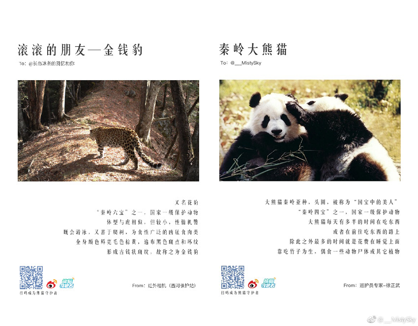
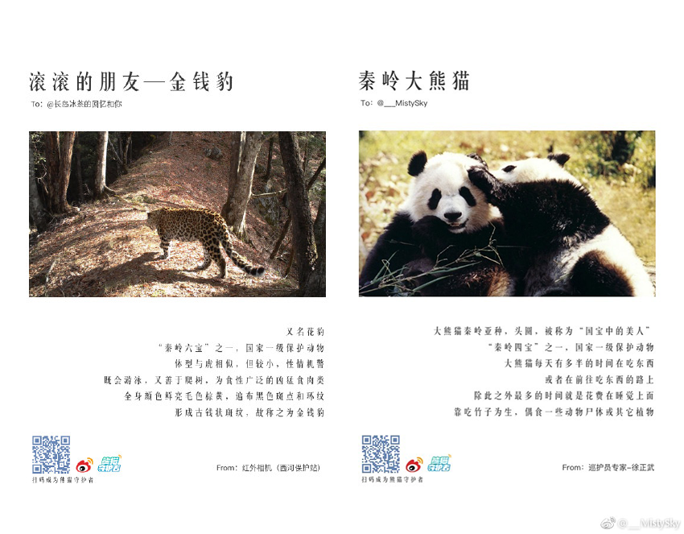

-
Panda's introduction
Animals are the best friends of human
-
Panda's historical development
-
Panda distribution
Panda protection
-
The future development direction of rare animals
Panda protection
After the founding of New China, pandas were valued and protected in China. Then, with the increasing scientific and specific protection measures, the number of pandas has increased significantly. And it is regarded as a national treasure animal. As a signature animal of the Chinese image brand. Because the panda is a rare animal unique to China. In the natural environment rule and survival competition, most animals are extinct, but the panda has survived. Moreover, the mild character represents China’s willingness to yearn for peace. The idea of "peace" in China is reflected in the black and white fur of the pandas. Because of the combination of black and white, it represents an important meaning in Chinese philosophy. For example, the Chinese Taiji, black and white, symbolizes balance and matches with the traditional Chinese philosophy. It is more helpful to let the people of the world understand China
Because of these characteristics of the panda, it makes it represent the image of the country. It also gives the panda better protection. Including the establishment of the Panda Sanctuary. Create a website about panda information, such as the "chinagiantpanda" website. The website comprehensively introduces the protection of pandas, the main Panda Sanctuary and the Panda Conservation Research Institute, which records the location and time of the pandas found in the wild and how to protect the pandas. It also focused on the field tracking of panda activities and panda volunteer activities. There are also have Panda live video, Panda Games, etc. Many local companies and brands are named after the panda. Includes logo, including products. Even the primary school's annual cultural performances will have a program to play pandas. Because of the extensive publicity of pandas that people will fully understand and like pandas. There are also more and more volunteers who are willing to participate in the observation of pandas and the protection of pandas. It can be seen that the panda can obtain such successful protection, except that because it is a rare animal, one of the important reasons is that the panda represents the image of China and the local.
Panda data collection
eMammal is a system for collecting, storing and sharing camera trap data. The system is designed for scientists and citizen scientists and anyone who wants to join the camera trap for fun and discovery. Citizen volunteers place "camera traps", infrared activated cameras in the landscape of parks and other natural areas to collect photos of mammals. Camera captures then use our custom software to view images, identify animals, and upload them to a data repository for viewing and storage. These data help researchers and scientists study and protect animals better. “eMammal is at the cutting edge intersection of the new technologies surrounding cloud computing and “big data” and the time honored tradition of citizens volunteering to help conservation efforts,” said Smithsonian Conservation Biology Institute Conservation Biologist, Tavis Forrester, Ph.D.
The Panda Project aims to determine the distribution of pandas and other large mammal species in and around the Panda Nature Reserve and to help local protected areas establish a large panda monitoring system that uses camera trapping. These data help researchers answer questions about the regional distribution and latitude of pandas and use this information to protect pandas. They also provide a unique perspective on the hidden wildlife world.
https://emammal.si.edu/search/node/panda
This citizenship program, all ages, education levels and background groups can participate in volunteers, to guide users to participate more deeply in the scientific protection of pandas and panda habitats. Let more people pay attention to wild pandas and gather more social power for the protection of wild pandas. Let the public subconsciously accept panda protection knowledge, further arousing the awareness of users to pay attention to ecology and protect the panda.
The panda promotion
"Panda Guardian" is a public welfare action organized by Weibo in cooperation with the China Green Foundation. The activity sends a video of the panda and knowledge about the panda on Weibo every day. And weibo users also can helping the panda to raise their virtual bamboo in the "Panda Guardian". And they can learn about the panda protection knowledge through the Panda Guardian. Then based on the number of virtual bamboos and the actual natural conditions of the panda habitat, the sponsors planted real bamboo in the panda habitat to scientifically repair the bamboo forest ecology of the panda habitat and alleviate the problem of “fragmentation” of the panda habitat. Local workers were hired for planting and raising work, which solved many local people's work problems. The lives of local residents have been closely linked to the protection of pandas.
The "Panda Guardian" quickly became popular with users. The Panda Guardian campaign took less than 6 months and the fans broke through 10 million. The product went online less than 9 months, the user broke 20 million, and invited many stars to promotion about protect the panda. The purpose of the "Panda Guardian" is to enhance the public's understanding of panda protection through Weibo transmission and social attributes.
"Panda Guardian" also opened the "Panda Postcard" function, the postcard has pictures of wild animals being captured, and has relevant scientific knowledge. In the subtle way, let users know the living status of wild species and cultivate the awareness of animal protection of users. And an important purpose is to help protect the ground to set up more infrared cameras, conduct wildlife behavior monitoring, obtain wildlife image data, and provide important information for wildlife protection.
 
